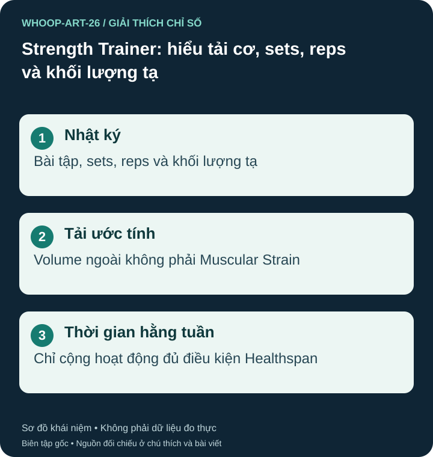

Vì sao nhịp tim chưa mô tả hết buổi tạ?
Một hiệp nặng có thể đòi hỏi cơ bắp nhiều nhưng không giữ nhịp tim cao lâu như chạy. WHOOP kết hợp tải tim mạch với phần tải cơ ước tính trong các hoạt động phù hợp, thay vì chỉ quy mọi gắng sức về nhịp tim. Hai phần không phải phép đo trực tiếp mô bị tổn thương. S01 S40

Ba mức thông tin không tương đương
Tài liệu hiện mô tả ba cách: ước tính tự động ở hoạt động phù hợp; liên kết bài tập sau buổi; hoặc ghi chi tiết bằng Strength Trainer. Ước tính tự động dựa vào loại và thời lượng có thể không phản ánh hết khác biệt cường độ: buổi dài hơn có thể được gán tải cao hơn dù buổi ngắn nặng hơn. Không nhập sets/reps không có nghĩa hoàn toàn không có ước tính tải cơ. S40
Đọc volume với giới hạn rõ
Sets là số hiệp; reps là lần lặp; weights là khối lượng tạ nhập theo kg hoặc lb. Với cùng bài và quy ước, volume ngoài có thể tính bằng tổng số lần × khối lượng. Ví dụ giả định dùng tổng 20 kg mỗi lần: 3 × 10 × 20 = 600 kg volume. Không phải bạn đã nâng một vật 600 kg, cũng không phải 600 joule công cơ học. Đây là ví dụ số học, không phải công thức độc quyền tính Muscular Strain. Với tạ đôi, kiểm tra trường nhập yêu cầu mỗi tay hay tổng; chưa xác minh một quy tắc chung cho mọi bài và phiên bản.
Tỷ lệ cardio/muscular của một buổi không phải tỷ lệ cơ thể tăng sức bền hoặc tăng cơ. So sánh nên đi cùng bài tập, kỹ thuật, mức gắng sức và cảm nhận hồi phục. Sửa loại bài hoặc cách ghi có thể làm kết quả đổi dù thể lực chưa đổi. S40
Strength Activity Time khác tải cơ
Trong danh sách hoạt động WHOOP, dấu * chỉ loại được tự tính Muscular Strain; dấu ^ chỉ loại được tính vào Strength Activity Time của Healthspan. Hai nhóm không đồng nhất. Thời gian hằng tuần cộng từ hoạt động đủ điều kiện; không phải chỉ thời gian cơ chịu tải, số hiệp hoặc số phút đạt một mức Strain. Kiểm tra đúng loại hoạt động trước khi so tuần. S50
WHO khuyến nghị người lớn tập các nhóm cơ lớn ít nhất hai ngày mỗi tuần, tùy khả năng. S04 Khi đau nhói, mất kiểm soát động tác hoặc có triệu chứng bất thường, dừng và đánh giá; không thêm hiệp chỉ để nâng Strain.
Nguồn tham khảo và phạm vi hỗ trợ
- S40 — WHOOP Support. WHOOP Strain. Phạm vi: Tải cơ tự động theo loại/thời lượng; liên kết bài sau tập; Strength Trainer ghi sets, reps, weights.
- S01 — WHOOP. How does WHOOP Strain work?. Phạm vi: Thang Strain phi tuyến 0–21; Day Strain và Activity Strain; tải tim mạch và cơ bắp.
- S04 — World Health Organization. Physical activity. Phạm vi: Vận động tốt hơn không vận động; tập cơ lớn ít nhất 2 ngày/tuần; hoạt động aerobic.
- S50 — WHOOP Support. List of WHOOP Activities. Phạm vi: Ký hiệu * chỉ hoạt động tự ước tính Muscular Strain; ^ chỉ hoạt động tính vào Strength Activity Time; hai danh sách không đồng nhất.
Bài biên soạn độc lập bởi Pulse & Vitality; tài liệu WHOOP và các nguồn khác được dùng để tham khảo. Đăng ngày 2026-10-27; nguồn đối chiếu 2026-10-26. Nội dung giáo dục, không thay thế đánh giá, chẩn đoán hoặc điều trị y tế.